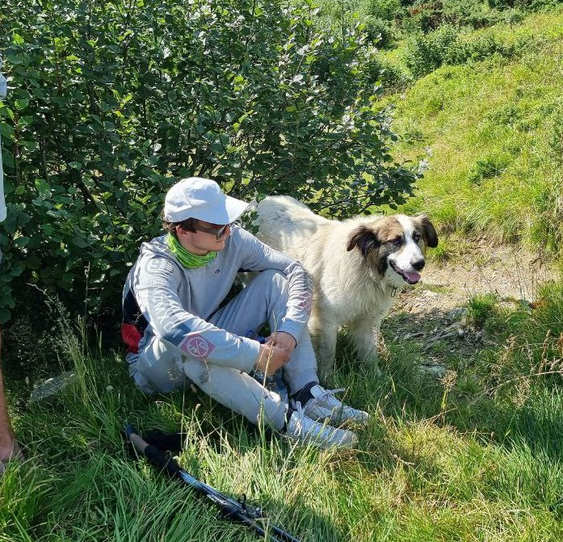
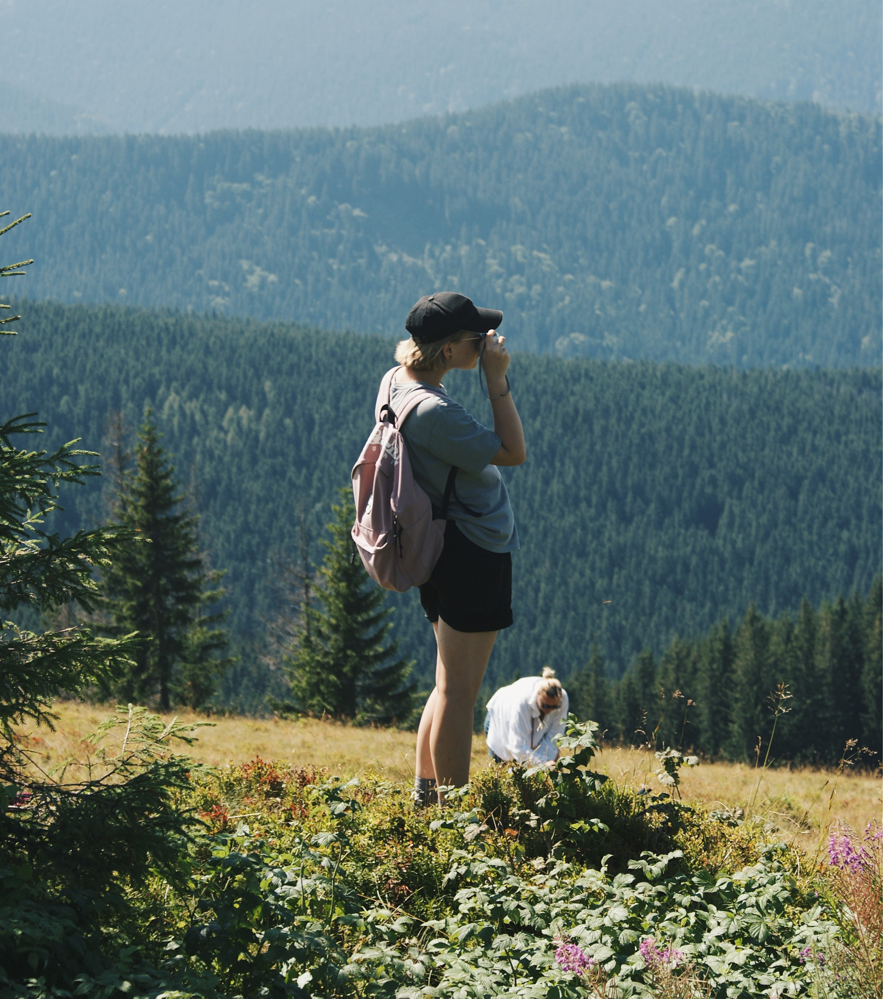
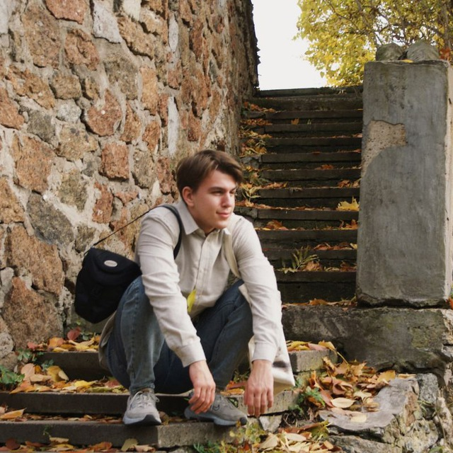

НАША КОМАНДА

Ірина Бадюлько
оцінка 9.8/10
Гірський гід, у туризмі більше 12 років. Водить треки в Альпах, Патагонії, Гімалаях, на Кавказі, в Андах, на Памірі і в Тибеті. 100% клієнтів досягли вершин та повністю подолали маршрути.

Арсен Мартин
оцінка 10/10
Гід-аспірант у міжнародній асоціації гірських гідів Киргизстану (KMGA), інструктор гірничого туризму з 2006 р., досвід занять альпінізмом з 2008 р., Робота гідом з 2008 р. Закінчив «курси першої допомоги у віддаленій місцевості», 2017 та 2019 р. Здійснив понад 20 сходжень…

Михайло Єрмілов
оцінка 10/10
Досвід роботи гідом: з 2009 року. Пройшов курс навчання на гірського гіда в киргизькій школі гідів KMGA (IFMGA). Чемпіон України 2012 року з техніки гірничого туризму. Володар Кубка Хортиці 2011 рік. Чемпіон України серед лижних походів – 5-6 к.с. 2009…

Віка Степанюк
оцінка 10/10
Альпінізм: учасник сходжень до 5а (Кавказ, Памір) – у великих горах, 6А у малих. Є досвід першопроходів у Криму. Здійснив 25 сходження на Ельбрус, а також 5 сходження на Казбек. Скелелазна кваліфікація: он-сайт 6с +, ред поінт 7б +. DT-D8....

Даня Яблоня
оцінка 10/10
Гід-аспірант у Киргизькій школі гірських гідів KMGA (член IFMGA). Пройшов курси надання першої медичної допомоги в горах, у 2017 та 2019 роках при одеському навчальному центрі SAR. Досвід роботи гідом з 2014 року. Альпінізм: Сходження – 6А, 2015р.,
